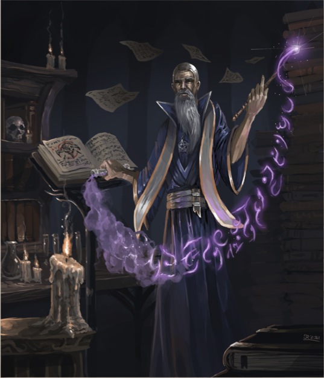

Most civilized cultures throughout the realm of creation have eventually created their own specialized forms of audible communication. These languages are often complex vocalizations unique to their species, although this does not mean one of a different species cannot learn them.
Each species in the lorebook has their own starting languages. These are given freely upon character creation and do not require any language points to learn.
Should a character wish to learn additional languages over the ones they begin with, they may do so between campaigns or at character creation. (It takes time to learn a language.)
The common link between all languages is the progression of learning. Each language has a few states, or levels, of complexity and are as follows.
(1) Understand : The character understands the essentials of what others say, but cannot speak the language themself.
(2) Speak : The character can speak simple sentences and can make themselves understood, although without any complex thoughts.
(3) Read/write simple : The character can speak the language perfectly, but hasn't quite grasped the writing. The writing and reading is mostly phonetic.
(4) Read/write complex : The character can write, read and speak the language perfectly.
While each language's complexity is specific to itself, the rarity of said languages are categorized. The languge cost increases significantly per category and are as follows :
Common : Common languages are spoken throughout the midlands and are used everyday by most common species.
Odd : Odd languages are still heard throughout the midlands, although not nearly as often, usually getting a strange look from others.
Rare : Rare languages are heard infrequently unless in certain specific areas of the midlands due to their rarity.
Fabled : Fabled languages are, as is implied, often associated with fables of old and many don't even believe that these languages exist.
Mythical : There are only a few mythical langauges, and these carry power in each and every word. Mythical languages cannot be learned without magical aptitude.
The amount of language points a character has is dependant on three aspects; the character's intelligence, the character's mastery and the character's backstory. (See the Mastery section).
Mastery : Characters may spend their mastery on language points. This is the main way to gain language points, and it is modified by the character's intelligence.
Intelligence : Characters of greater intelligence have an easier time grasping languages over their years. For each point of intelligence, reduce the years required for a mastery point by i per intelligence point, to a minimum of 1 per point.
Backstory (Optional) : If a character requires a language to match their backstory, but doesn't have the intelligence or age to match it, they may ask the Game Master if it's ok. Keep in mind that an overloaded character isn't always fun for other players.
"Tis ever fascinating to me, on the subject of languages that is. The further back you go, the more lyrical they seem to be. Quite intriguing, wouldn't you say?" - Langdar the Sorcerer